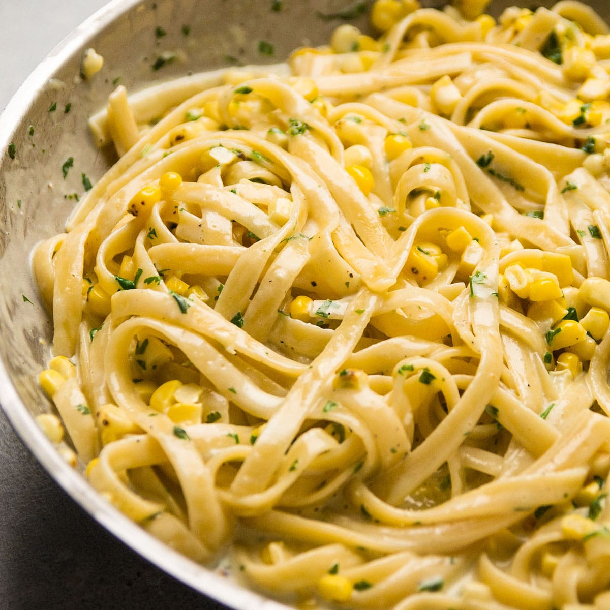

Classic Creamy Fettuccine Alfredo
- Cook Pasta: Boil a large pot of salted water and cook fettuccine pasta until al dente. Drain and set aside.
- Prepare Sauce: In a saucepan, melt butter over medium heat. Add heavy cream and simmer for 5 minutes.
- Combine: Reduce heat and stir in grated Parmesan cheese until melted and smooth.
- Toss: the cooked pasta with the Alfredo sauce. Season with salt and pepper to taste.
- Serve: Garnish with chopped parsley and additional Parmesan cheese. Serve hot.
Back to main menu